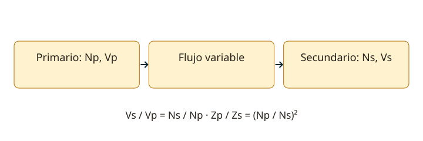

Lección 4 de 16
Magnetismo y transformadores
Comprende la inducción, la relación de espiras y la adaptación de impedancias, con sus pérdidas y límites.
Campo magnético e inducción
Una corriente crea un campo magnético alrededor del conductor. Una bobina concentra el campo; un núcleo puede aumentar el flujo según su permeabilidad. La densidad de flujo B se mide en teslas y el flujo Φ en webers. Un flujo variable induce tensión: su magnitud depende del número de espiras y de la rapidez del cambio. La ley de Lenz indica que la respuesta inducida se opone al cambio que la origina. Un campo estático no produce una tensión inducida continua en una bobina inmóvil.
Transformación de tensión y corriente
Un transformador tiene devanados acoplados por un flujo variable. En el modelo ideal, Vs/Vp = Ns/Np y Is/Ip = Np/Ns; la potencia de entrada iguala la de salida. Al reducir tensión puede aumentar la corriente disponible, dentro de sus límites. No convierte continua estable en otra tensión por sí solo. Un transformador para 50 Hz tampoco es intercambiable sin más con uno de RF: cambian material, geometría, pérdidas y capacitancias parásitas.

Impedancia referida al primario
Una carga Zs vista desde el primario aparece multiplicada por (Np/Ns)². Por eso una relación de impedancias de 100:1 requiere una relación de espiras de 10:1. Esta propiedad permite adaptar cargas entre etapas o antenas. La relación de impedancias y la de tensión son magnitudes diferentes. La adaptación depende también del ancho de banda, de las pérdidas y del comportamiento del núcleo.
Núcleo, cobre y calentamiento
Los devanados pierden potencia por su resistencia. El núcleo tiene pérdidas por histéresis y corrientes parásitas; las láminas o ferritas apropiadas reducen algunas de ellas. La saturación aumenta mucho la corriente magnetizante y distorsiona la onda. En una sinusoide, Vef ≈ 4,44 f N A Bmáx, con área A en m². Esta ecuación orienta el número mínimo de espiras, pero no define sola un diseño: faltan aislamiento, ventana, temperatura, corriente y material.
Tipos y elección del modelo
Un transformador con devanados separados puede proporcionar aislamiento galvánico si su construcción lo permite. Un autotransformador comparte parte del devanado y no ofrece ese aislamiento. Una toma central divide un devanado en dos mitades relacionadas con un punto común; observa si una tensión está especificada de extremo a extremo o de cada extremo al centro. En radio también se emplean transformadores de impedancia y balunes para adaptar impedancias o simetría.
Medir y verificar
Comprueba la relación de tensiones en condiciones conocidas y observa cómo cambia al cargar el secundario. La regulación describe esa variación; la eficiencia es Psalida/Pentrada. La corriente nominal y los VA limitan la carga, y una fuente con rectificación y condensador puede exigir picos superiores a la corriente continua de salida. Para aprender en banco usa montajes de baja tensión apropiados; un cálculo ideal no constituye un plano seguro de conexión a la red.
Resuelve paso a paso
Espiras y potencia
Np = 1.000 y Ns = 100. Con 120 V alternos ideales, Vs = 12 V. Si entrega 2 A, son 24 VA y el primario ideal toma 0,2 A. El real necesita algo más por sus pérdidas.
Adaptar una carga
Para que una carga de 50 Ω se vea como 800 Ω, Np/Ns = √(800/50) = 4. La relación de impedancias es 16:1 y la de espiras 4:1.
Comprueba lo aprendido: ¿Un autotransformador que baja la tensión garantiza aislamiento de la red?
No. Sus devanados comparten conexión eléctrica; bajar tensión y aislar son funciones diferentes.
Preguntas oficiales de este tema
Selecciona una alternativa y pulsa «Comprobar respuesta». Si fallas, podrás ver la respuesta correcta para seguir aprendiendo. Las preguntas con incidencias documentales se muestran solo para consulta y no se califican.
Continúa tu recorrido
Fuentes de estudio: programas técnicos y banco SUBTEL, apéndices A–E, versión 06/12/2020, y sus solucionarios oficiales. Reglamentación: Decreto 523, versión 21/06/2013; evaluación: Resolución Exenta 2620/2023. Revisión documental: 11/11/2026. Explicaciones, cálculos y esquemas didácticos de RUFCOM. Consultar documentos oficiales.